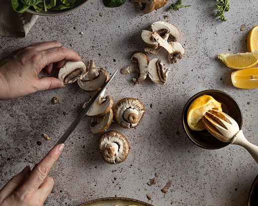
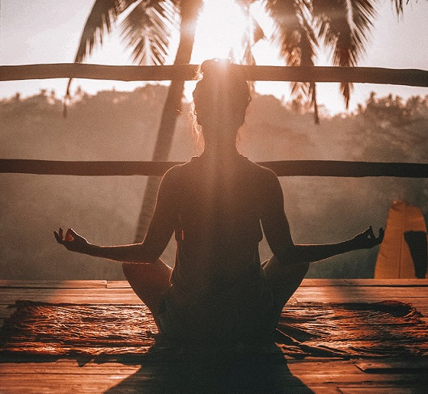
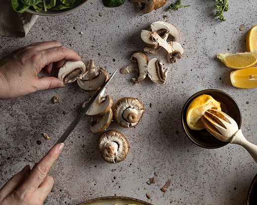
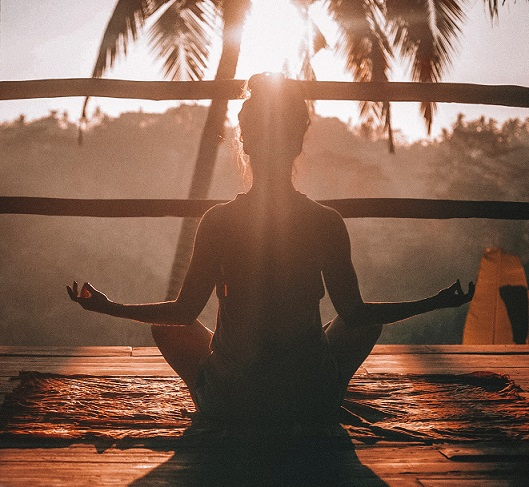

O que dizer sobre mim?
Olá!
O meu nome é Bruno Costa, nasci em 1996 e neste momento tenho 2 cadelinhas 🐶
Olá!
O meu nome é Bruno Costa, nasci em 1996 e neste momento tenho 2 cadelinhas 🐶

O sucesso é um grande triângulo, tendo como vértices o caráter, a competência e o esforço.
Programar
Designer
Fotografar
Editor de Video
A experiência é o nome que damos aos nossos erros
Podemos considerar que a experiência de uma pessoa é um misto de vivências quer seja pelo que aprendemos em ambiente escolar, como por exemplo eu gosto de programar porque sempre primeiramente gosto de investigar qual a lógica por de trás de uma aplicação, também porque fui incitado pelos meus professores no secundário a continuar nesta área, porque viram um possível potencial em mim. Sempre me senti noutro mundo a programar e assim que decidi que era isto que queria fazer para a vida. Em termos profissionais comecei por trabalhar num estúdio de fotografia o que adorei e derivado a isto despertou em mim um sentido de perfecionismo e gosto pela área gráfica à qual não tinha até à data. A minha última experiência permitiu-me desenvolver alguns projetos que tinha em mente e pôde por em prática mas como isto surgiram outros, aos quais me apercebi que se queria colocá-los em prática iria necessitar de mais conhecimento e assim decidi voltar a estudar novamente.
Como todo
 


